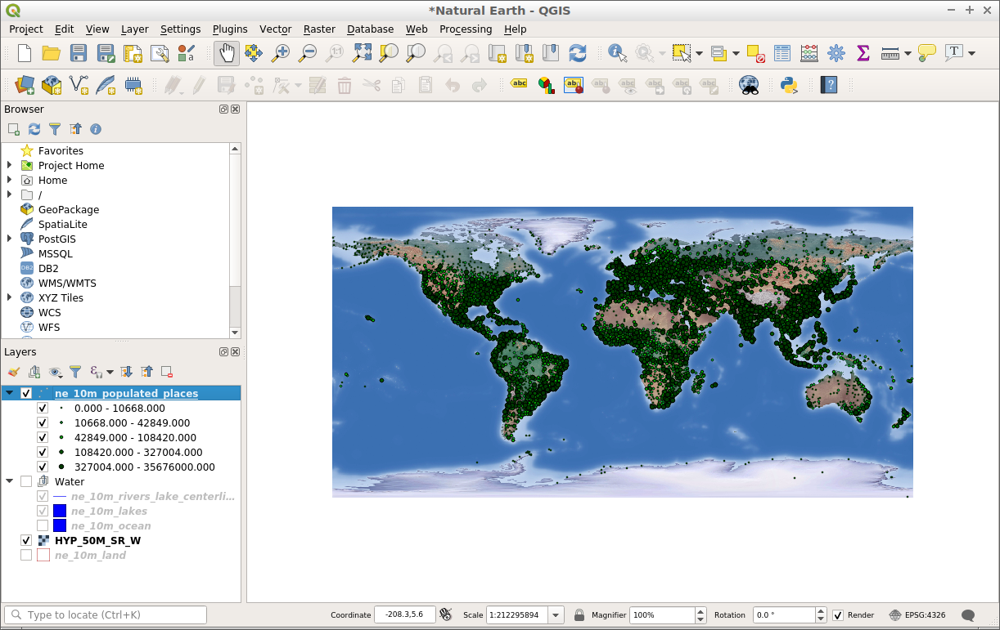

QGIS¶
Desktop GIS¶
QGIS is a user friendly, Open Source, GIS client where you can visualize, manage, edit, analyse data, and compose printable maps. It includes powerful analytical functionality through integration with GRASS, SAGA, Orfeo Toolbox , GDAL/OGR and many other algorithm providers. It runs on Linux, Unix, Mac OSX, and Windows and supports numerous vector, raster and database formats and functionality.
{kind=link}
Core Features¶
Friendly graphical user interface:
identify/select features
edit/view/search attributes
on the fly projection
print composer
feature labeling
change vector and raster symbology
add a graticule layer
and more …
Easy Viewing of many Vector and Raster Formats
database tables: PostgreSQL/PostGIS, Oracle Spatial, MS SQL Spatial, SpatiaLite
most vector formats: including ESRI shapefiles, MapInfo, SDTS and GML, OpenStreetMap vectors
raster formats such as digital elevation models, aerial photography or landsat imagery
GRASS locations and mapsets
online spatial data served as OGC-compliant WMS, WMTS, WFS or WCS
2.5D rendering support
Create, edit and export spatial data using:
digitizing tools for GRASS and shapefile formats
the georeferencer plugin
GPS tools to import and export GPX format, convert other GPS formats to GPX, or down/upload directly to a GPS unit
Perform spatial analysis using integrated support for SAGA, OTB, MMGIS and GRASS
map algebra
terrain analysis
hydrologic modeling
network analysis
comprehensive searchable toolbox of functions
define and run reusable analysis routines by chaining functions using a graphical modelling tool
and many others
Publish to the internet
Extensible plugin architecture
Implemented Standards¶
OGC standards compliant (WMS, WFS, … )
Details¶
Website: https://www.qgis.org/en/site/
Licence: GNU General Public License (GPL) version 2
Software Version: 3.16.4
Supported Platforms: Windows, Linux, Mac, Unix
Community Support: https://qgis.org/en/site/forusers/support.html
Commercial Support: https://qgis.org/en/site/forusers/commercial_support.html